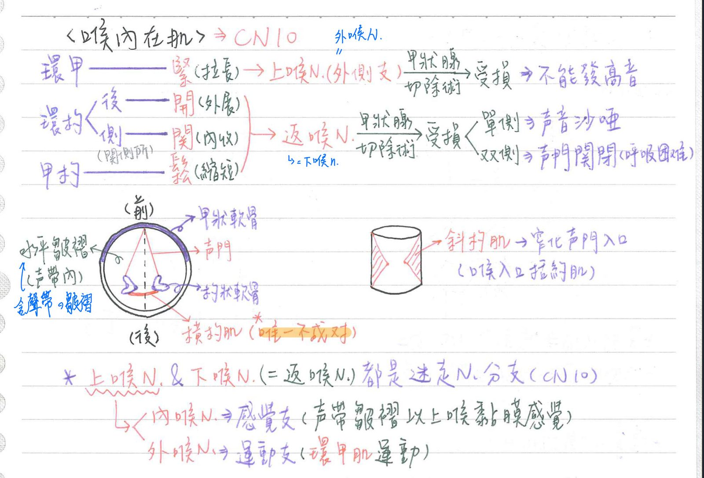
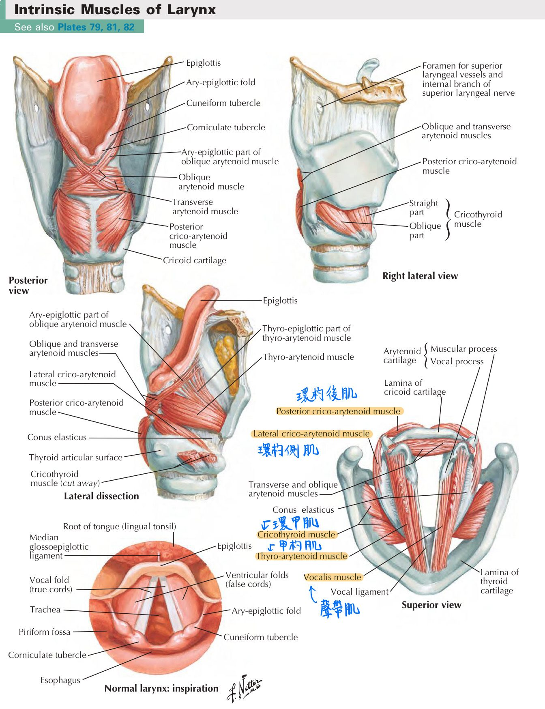

💪🏼 肌肉系統：喉內在肌
喉內在肌：管聲帶運動
| 肌肉 | 神經支配 | 運動 | 備註 |
|---|---|---|---|
| 環甲肌(cricothyroid m.) | ★★上喉N(外喉N) | ★聲帶拉長(拉緊) | 上喉N為CN10的分支 |
| 環杓後肌(posterior cricoarytenoid m.) | 喉返N(CN10分支) | ★聲帶外展(打開) | |
| 環杓側肌(lateral cricoarytenoid m.) | 喉返N(CN10分支) | 聲帶內收(關閉) | |
| 甲杓肌(thyroarytenoid m.) | 喉返N(CN10分支) | 聲帶收縮(放鬆) | |
| 橫杓肌(transverse arytenoid m.) | 喉返N(CN10分支) | 聲帶內收(關閉) | ★唯一不成對 |
| 斜杓肌(oblique arytenoid m.) | 喉返N(CN10分支) | 窄化聲門入口 | =喉入口括約肌 |
| 聲帶肌(vocalis m.) | 喉返N(CN10分支) | 調整聲帶張力 |
- 喉內在肌：位於喉部軟骨內側的肌肉
- 皆為迷走N(CN10)支配，除★環甲肌是由上喉N/外喉N支配以外；★其餘為喉返N支配
- 除橫杓肌以外，其餘成對
- 上喉N可分為：
- 外喉N：支配環甲肌運動
- 內喉N：
- ★和上喉A伴行穿過甲狀舌骨膜
- 支配聲帶皺褶以上喉黏膜感覺
<cf> 聲帶皺褶以下喉黏膜感覺：喉返N
- 甲狀腺切除術可能損傷：
- ★★喉返N(最常見)：單側→聲音沙啞；雙側→聲門關閉(呼吸困難)
- 上喉N(第二常見)：發高音時無力(無法拉緊聲帶)


📖 書本補充：與筆記不同或筆記沒寫到的地方
⚠️
以下為對照書本後整理，筆記原文未更動。肌肉與神經的部分和筆記一致，以下主要是書上多出來的細節。
喉肌的作用（p.567）
- 書把喉肌分成外在肌（舌骨上肌群＝上提喉；舌骨下肌群＝下壓喉）與內在肌。
- 內在肌的作用（書用杓狀軟骨的動作來描述）：
- 環杓外側：把杓狀軟骨的肌肉突往前拉 → 聲帶突往內側靠
- 杓橫：把兩側杓狀軟骨拉在一起
- 環杓後：把肌肉突往後拉 → 分開聲帶突
- 環甲：把甲狀軟骨往前及往下拉 → 提高音高（pitch）
- 甲杓：把杓狀軟骨往前拉
- 書的提示：
- 只有環杓後肌能打開聲門；環杓外側、杓橫及杓斜肌是關閉聲門（即發出聲音時）。
- 環甲肌（拉緊聲帶）和甲杓肌（放鬆聲帶）互為拮抗肌。
喉的神經（p.508、p.568）
- 喉上神經的喉內支除了聲帶以上的黏膜感覺，還帶喉的副交感（黏膜上的腺體）。
- 喉返神經（＝喉下神經）的迴旋位置：左側繞動脈韌帶、右側繞鎖骨下動脈；它負責環甲肌以外的所有喉內在肌，以及聲帶以下的黏膜感覺。
- 書的提示：特別注意喉返神經損傷造成的聲音沙啞；左右迷走神經幹分別走在食道的前面和後面。
- 喉返神經受損的情境（考題）：縱膈手術、右肺尖腫瘤、肺癌、甲狀腺手術（101-1-19、102-2-14、109-1-24、103-1-7、106-1-15）。
- Claude 註：p.568 表格寫「所有喉部內在肌（來自第 4 對咽弓）」，但同書 p.95 的咽弓表把喉的內在肌列在第 6 咽弓、環甲肌列在第 4 咽弓（p.472 則把第 4、6 對合併成一格）。一般教科書是：環甲肌＝第 4 咽弓、其餘喉內在肌＝第 6 咽弓。
喉的血管（p.568–569）
- 喉上動脈（來自甲狀腺上A）：與喉內神經伴行，一起穿過甲狀舌骨膜，供應喉的上部。
- 環甲動脈（甲狀腺上A）：供應環甲肌。
- 喉下動脈（來自甲狀腺下A）：與喉下（喉返）神經伴行，供應喉的下部。
- 靜脈：甲狀腺上、中靜脈→內頸靜脈；甲狀腺下靜脈→頭臂靜脈。
喉的骨架（p.564）
- 單一：甲狀（透明）、環狀（透明）、會厭（彈性）；成對：杓狀（透明）、小角（彈性）、楔狀（彈性）。
- 甲狀舌骨膜：連接甲狀軟骨和舌骨，有喉內神經和血管穿過。
- 方形膜：下緣形成前庭韌帶（覆蓋前庭襞＝假聲帶），上緣形成杓會厭韌帶。
- 環甲外側韌帶＋聲韌帶＝彈力圓錐（環聲帶膜）；聲韌帶＋聲帶肌＝聲帶（真聲帶）；聲門介於兩側真聲帶之間。
- 高度：舌骨約在 C3，可用來推估附近構造（環狀軟骨、氣管起點約在 C6）。
📝 書中歷屆考題（點選答案作答）
108-1-2p.570
甲狀腺切除手術不慎傷及喉外神經 (external laryngeal nerve)，下列何肌的功能最可能受損？
108-2-17p.570
下列那一肌肉是由喉外神經 (external laryngeal nerve) 支配？
💡 其他三條是與發聲有關的喉內在肌，由喉下神經支配。
106-1-15p.569
甲狀腺 (thyroid gland) 手術，最可能造成下列何神經受損？
103-1-7p.509
甲狀腺術後聲音嘶啞 (hoarseness)，下列何者最可能受傷？
101-1-19p.508
縱膈手術後，聲音沙啞且聲帶不動，下列何者的分支最可能損傷？
102-2-14p.508
病患右肺尖端有腫瘤，且出現聲音嘶啞的情形，腫瘤最可能已經侵犯下列何者？
💡 右肺尖已接近頸部，腫瘤會壓迫到右側喉返神經（右側繞鎖骨下動脈）。
109-1-24p.509
肺癌病患若出現聲帶麻痺，最有可能是影響到那一條神經？
104-2-6p.570
下列何者穿過甲狀舌骨膜 (thyrohyoid membrane)？
112-2-9p.570
下列那一條神經，會穿過甲狀舌骨膜 (thyrohyoid membrane) 進入喉部？
102-2-5p.565
有關舌骨 (hyoid bone) 的敘述，下列何者正確？
💡 舌骨呈 U 型；附著在大角上的是中咽縮肌；與會厭軟骨相接的是甲狀軟骨的後端。
104-2-5p.565
環狀軟骨 (cricoid cartilage) 相對於何脊椎骨高度？
💡 舌骨約在 C3，故 (A)(B) 不可能；(D) 已到胸部。
110-2-17p.566
氣管 (trachea) 及食道 (esophagus) 最上端，起自何脊椎骨高度？
💡 舌骨約在 C3，氣管在甲狀軟骨和環狀軟骨的下方，故 C6 最合理。
106-1-1p.570
下列何者的血液，不回流至內頸靜脈 (internal jugular vein)？
💡 甲狀腺下靜脈回流至頭臂靜脈。
110-1-3p.570
下甲狀腺靜脈 (inferior thyroid vein) 通常回流到：